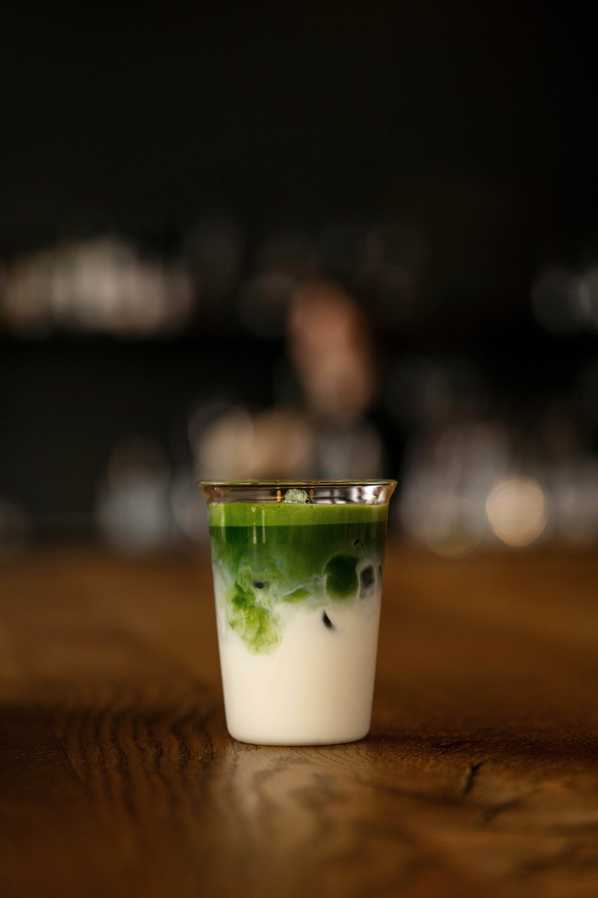

Menu
Espresso

-
Espresso
$3.50
A single or double shot of our Hayes Valley blend. Rich, chocolatey, with a hint of dried fruit.
-
Cortado
$4.50
Equal parts espresso and steamed whole milk. Small, balanced, and smooth.
-
Cappuccino
$5.00
Double espresso with equal parts steamed milk and thick microfoam.
-
Latte
$5.50
Double espresso with steamed milk and a thin layer of foam. Available hot or iced.
-
Flat White
$5.00
Ristretto shots with velvety steamed whole milk. Stronger than a latte, smaller than a cappuccino.
-
Macchiato
$4.00
Espresso marked with a dollop of thick foam. Simple and bold.
Cold Drinks

-
New Orleans Iced Coffee
$6.00
Cold brew brewed with roasted chicory, blended with whole milk and organic cane sugar. A Kai's classic.
-
Shakerato
$6.50
Espresso shaken with ice, a touch of sugar, and a splash of vanilla until frothy and chilled.
-
Cold Brew
$5.50
Steeped for 18 hours in cold water. Smooth, low-acid, and served over ice.
-
Iced Latte
$5.50
Double espresso over ice with your choice of whole milk or oat milk.
-
Sparkling Espresso
$6.00
A shot of espresso over sparkling water. Refreshing, bright, and unexpected.
Non-Coffee

-
Matcha Latte
$6.00
Ceremonial grade matcha whisked with steamed oat milk. Earthy and smooth.
-
Chai Latte
$5.50
Black tea blended with a custom mix of Ethiopian spices, steamed with whole milk.
-
Hot Chocolate
$5.00
Rich dark chocolate with steamed whole milk and a pinch of sea salt.
-
Sparkling Water
$3.00
Sourced from underground basins of glacier water in the Dolomites.
Pastries

-
Butter Croissant
$4.50
Flaky, buttery, and baked fresh each morning. Best enjoyed warm.
-
Sesame Pretzel Croissant
$5.00
A savory twist on our classic croissant, topped with sesame seeds and sea salt.
-
Almond Croissant
$5.50
Twice-baked with almond cream filling and topped with sliced almonds and powdered sugar.
-
Banana Bread
$4.00
Moist and dense, made with overripe bananas and a touch of cinnamon.
-
Seasonal Scone
$4.50
Our rotating scone features locally sourced seasonal ingredients. Ask your barista what's in today.